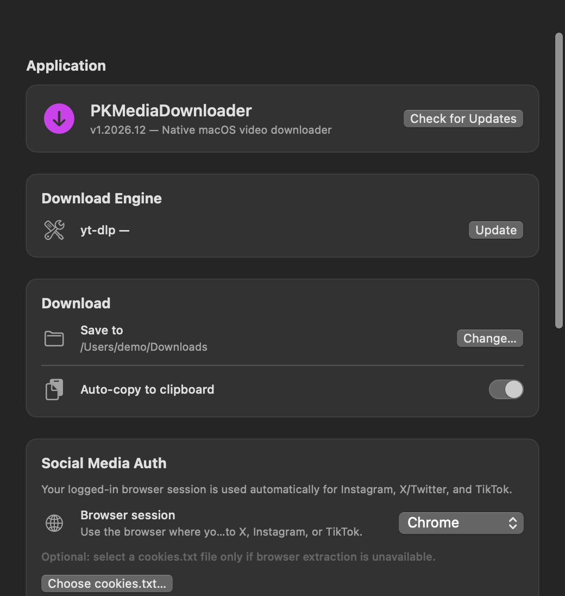

COLLER
Une vidéo ou une playlist YouTube. yt-dlp prend en charge de nombreux autres sites.
LE STUDIO VIDÉO DE VOTRE MAC
Collez l’adresse d’une vidéo. PKMediaDownloader la télécharge, la garde dans votre historique et vous laisse en découper l’essentiel.

01 / 03 — LE PARCOURS
Trois gestes. Aucun faux tableau de bord.
Une vidéo ou une playlist YouTube. yt-dlp prend en charge de nombreux autres sites.
Suivez la progression, puis retrouvez chaque fichier dans l’historique de l’app.
Gardez un extrait, enregistrez-le ou copiez-le pour le partager.
02 / 03 — DANS L’APP
L’historique rassemble vos fichiers. Le raccourci global ⌘⇧6 rappelle l’app de partout. Les réglages vous laissent choisir le navigateur connecté pour les sites qui demandent une session.
Captures des vues SwiftUI réelles, avec données fictives.

↗ / PLAN B
Essayez Cobalt dans votre navigateur. C’est un service externe : PKMediaDownloader ne lui envoie jamais votre lien automatiquement.
03 / 03 — INSTALLER
DMG direct ou Homebrew. Le cask installe aussi yt-dlp et ffmpeg ; avec le DMG seul, installez-les séparément.
Signé ad hoc, non notarisé. Au premier lancement, macOS peut demander une autorisation dans Réglages système → Confidentialité et sécurité. macOS 14+ · Apple Silicon uniquement.